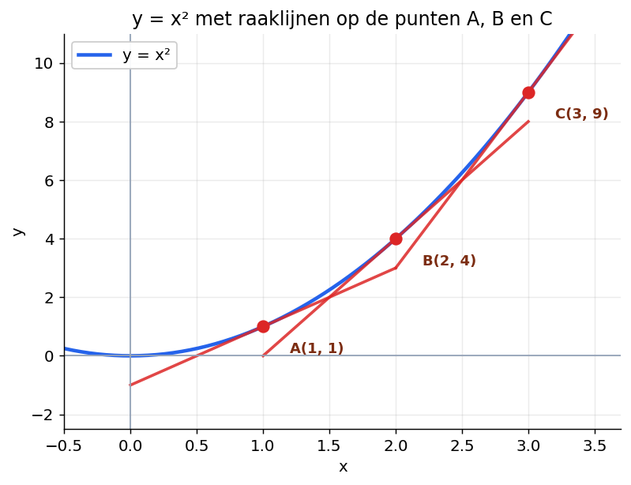
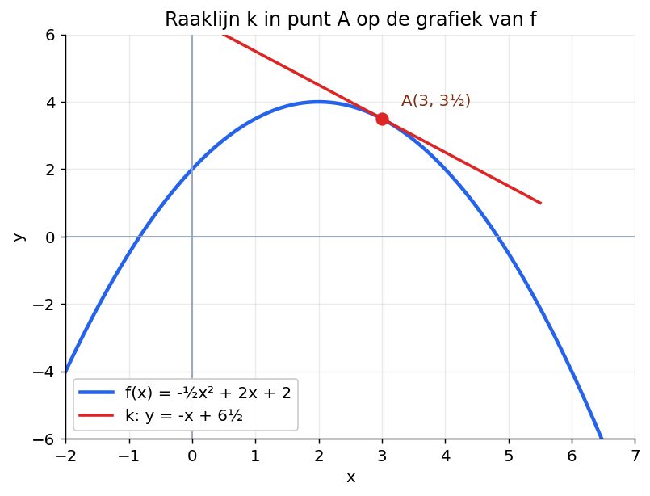
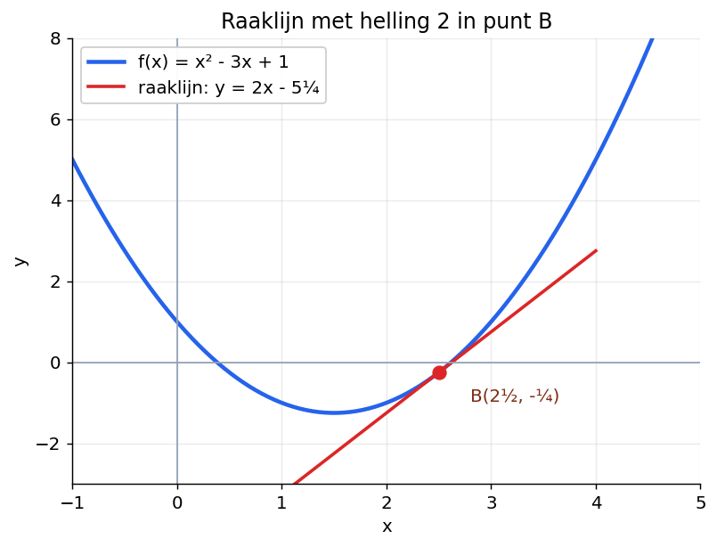
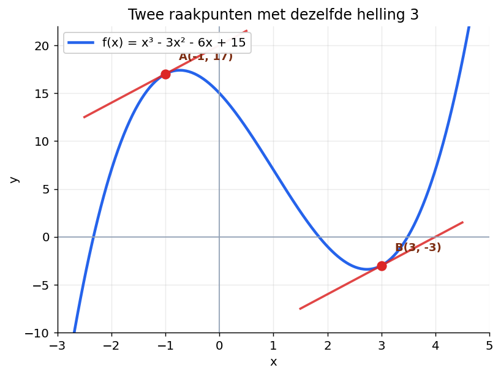
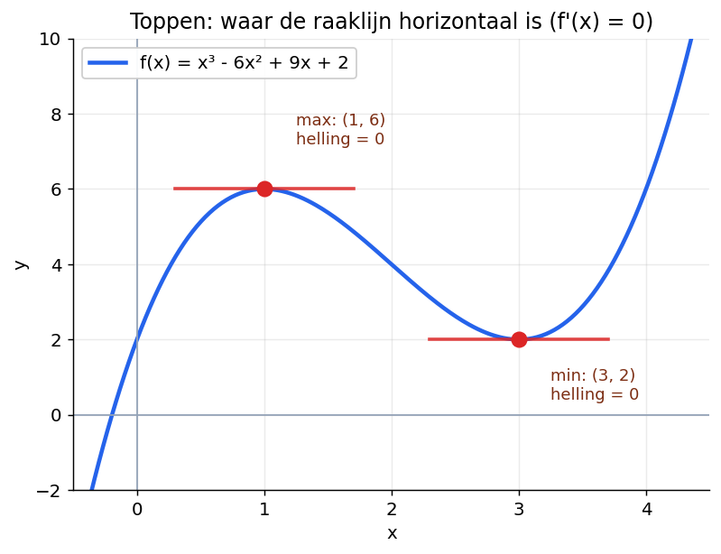
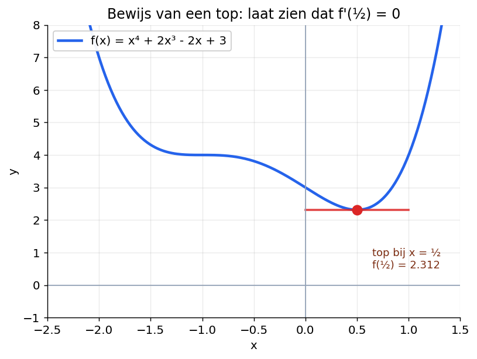

Helling, raaklijn, top — stap voor stap
Klik op de knop hieronder en je tutor begeleidt je stap voor stap door deze paragraaf. Werk in je eigen tempo. Een fout antwoord is geen probleem — daar leer je juist van.
Je kent helling al van rechte lijnen. Bij een lijn y = ax + b is a de helling.
Maar wat doe je bij een kromme lijn, zoals een parabool?
Dan teken je een raaklijn. Dat is een rechte lijn die de grafiek in één punt raakt en verder niet kruist. De helling van die raaklijn is de helling van de grafiek in dat punt.

Pak je geodriehoek erbij of stel je voor dat je hem op de raaklijnen legt.
Lees voor elk van de drie punten A, B en C de helling af.
Wat zie je gebeuren met de helling als x groter wordt? Praat erover met je tutor.
Dat is een patroon. Dezelfde regel werkt ook voor andere machten, zoals x³ en x⁴.
De helling-functie noemen we de afgeleide. We schrijven die als f'(x) (lees: f-accent van x).
Het uitrekenen van de afgeleide heet differentiëren.
De grafiek van de afgeleide heet de hellinggrafiek. Die zegt voor elke x hoe steil de oorspronkelijke grafiek daar is.
Je hoeft niet meer met een geodriehoek te meten. Je rekent de helling uit met deze regels:
Een som van termen differentieer je term voor term:
Differentieer f(x) = 4x³ − 7x² + 5x + 8.
Pak elke term apart:
Differentieer g(x) = (3x² − 1)².
Eerst de haakjes wegwerken:
Dan term voor term:
(In §6.3 leer je de kettingregel — dan kun je dit ook zonder haakjes wegwerken.)
Je weet nu hoe je f'(x) berekent. En je weet dat f'(x) de helling van de grafiek in punt x geeft.
Die helling is ook de helling van de raaklijn in dat punt. Met andere woorden: f'(x) is precies wat je nodig hebt om de raaklijn op te stellen.

Stel de raaklijn k op aan de grafiek van f(x) = −½x² + 2x + 2 in punt A met xA = 3.
Stap 1. Bereken yA door xA = 3 in f in te vullen:
Dus A(3, 3½).
Stap 2. Bereken de helling van f in x = 3:
Stap 3. De raaklijn k heeft de vorm y = −x + b. Bereken b door A in te vullen:
Antwoord:
Stel de raaklijn k op aan de grafiek van f(x) = x² − 4x + 5 in het punt A met xA = 1. Vul stap voor stap in.
Nu het andere geval. Je krijgt een helling, en je moet het raakpunt vinden.
Dan los je op: f'(x) = (gegeven helling).

Op de grafiek van f(x) = x² − 3x + 1 is een punt B waar de helling 2 is. Bereken de coördinaten van B.
Stap 1. Bereken f'(x):
Stap 2. Los op f'(x) = 2:
Stap 3. Bereken y door x = 2½ in f in te vullen:
Antwoord: B(2½, −¼).
Bij een hoger-graads functie kunnen er meerdere punten zijn met dezelfde helling.

Op de grafiek van f(x) = x³ − 3x² − 6x + 15 zijn punten waar de helling 3 is. Bereken exact de coördinaten van deze punten.
Stap 1. Bereken f'(x):
Stap 2. Los op f'(x) = 3:
Stap 3. Bereken y voor elk gevonden x:
Antwoord: A(−1, 17) en B(3, −3).
1. Op de grafiek van f(x) = x² − 6x + 1 is een raakpunt waar de helling 4 is. Bereken de coördinaten.
2. Op de grafiek van f(x) = x³ − 12x zijn raakpunten met helling 0. Hoeveel zijn dat er? En wat zijn de coördinaten?
Een top van een grafiek is een hoogste punt (maximum) of een laagste punt (minimum).
Bij een top loopt de grafiek even vlak. Dat betekent: de helling is daar nul.
Met andere woorden: in een top geldt f'(x) = 0.

Bereken exact de extreme waarden van f(x) = x³ − 6x² + 9x + 2.
Stap 1. Bereken f'(x):
Stap 2. Los op f'(x) = 0:
Stap 3. Kijk naar figuur 4: bij x = 1 ligt een maximum, bij x = 3 ligt een minimum.
Stap 4. Bereken de y-coördinaten:
Antwoord: max f(1) = 6 en min f(3) = 2.
Bereken exact de extreme waarden van f(x) = x² − 8x + 7.
Soms krijg je de vraag: "Toon aan dat f een top heeft bij x = a." Of: "Bewijs dat f een top heeft bij x = a."
Je moet dan twee dingen laten zien.
Verschil tussen aantonen en bewijzen:

Bewijs dat f(x) = x⁴ + 2x³ − 2x + 3 een extreme waarde heeft bij x = ½.
Stap 1. Bereken f'(x):
Stap 2. Vul x = ½ in:
Stap 3. In figuur 5 zie je dat de grafiek bij x = ½ een top heeft.
Conclusie: f heeft een extreme waarde bij x = ½.
Toon aan dat f(x) = x³ − 12x + 5 een extreme waarde heeft bij x = 2.
Op de toets krijg je opgaven met meerdere deelvragen die op elkaar bouwen. Hier oefen je dat — een opgave is pas af als alle deelvragen kloppen.
Gegeven is de functie f(x) = x³ − x² + 2x − 4. De lijn k raakt de grafiek van f in het punt A met xA = 1.
Gegeven is de functie h(x) = −x² + 5x − 4. De lijn k heeft helling 2 en raakt de grafiek van h in punt A.
Gegeven is de functie f(x) = x³ − 12x + 10. Bereken exact de extreme waarden van f.
Klik op de tutor-knop rechtsonder. Vertel welke opgave en deelvraag, en bij welke stap je vastloopt.